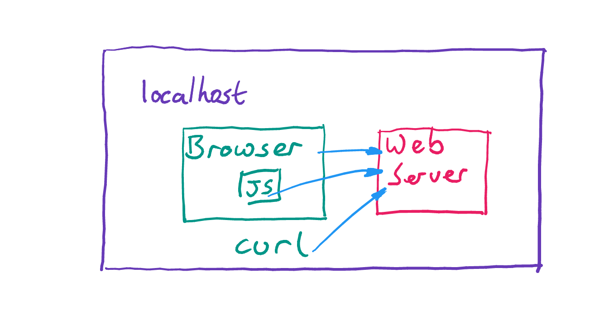
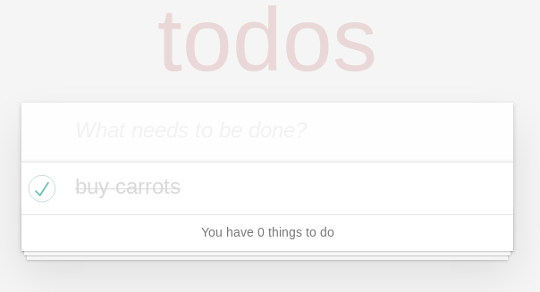
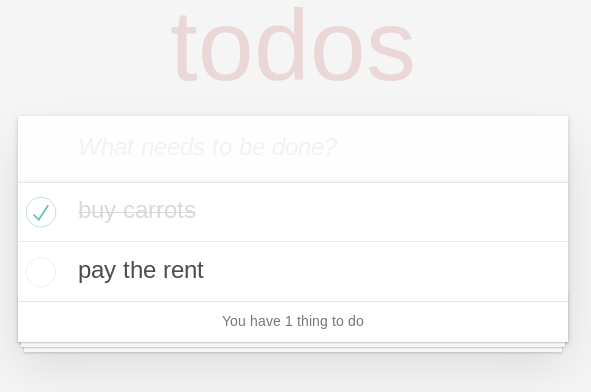
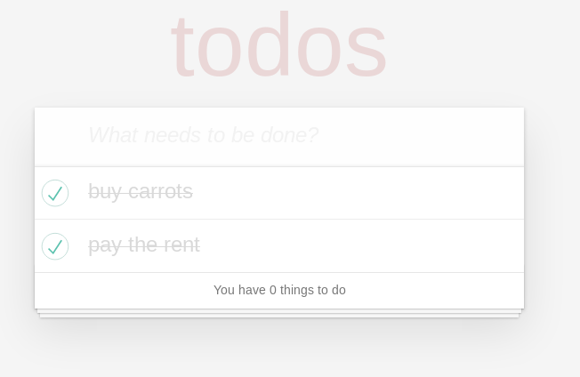
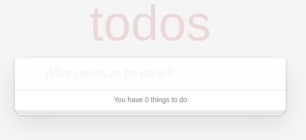
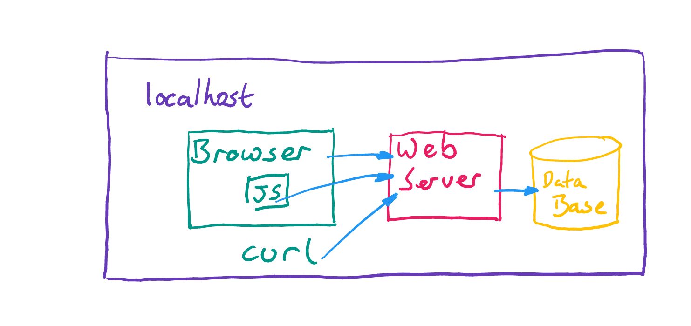
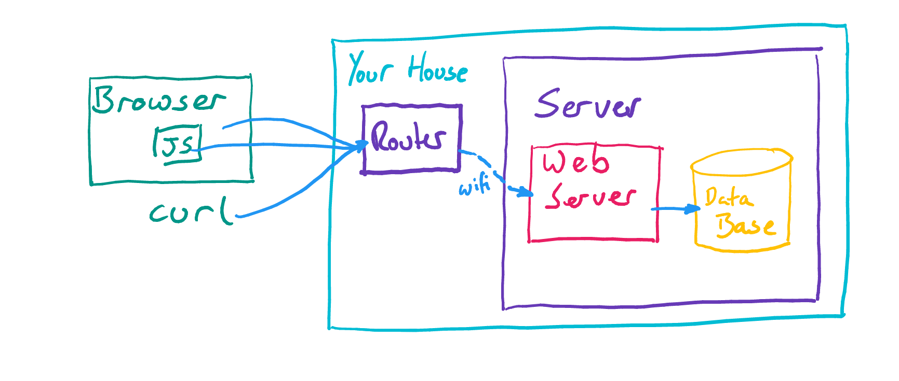
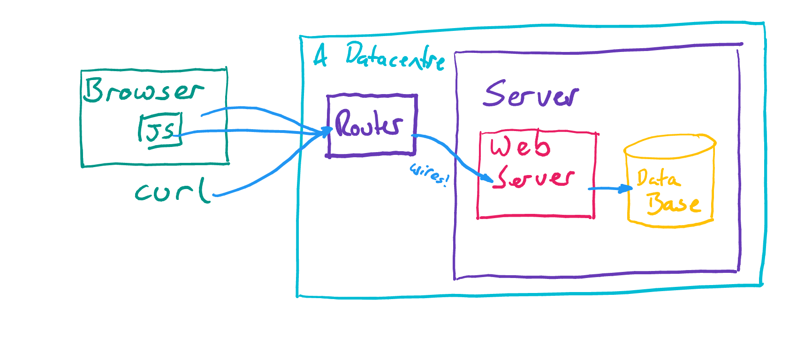

Running software on the internet
This book is about making software that runs on the internet. Actually it's really about running the software, but in order to show how to do that, we need to make some software first.
The software we're going to run on the internet
Our example is a "Todo list" application. It's deliberately very simple, but still complex enough to show everything we need. The source for the app, along with instructions for building it are on the project source repo. We use Spring Boot, Vue.js and Gradle which are all popular choices and have good documentation.
A "webserver"
When you're online almost everything you do uses HTTP to pass messages back and forth. HTTP was invented by Tim Berners-Lee in 1989 and is one of the reasons why he's considered to be the inventor of the World-Wide Web.
HTTP is a simple protocol, consisting of requests (eg "Can I have this webpage please?") and responses (eg "Yes, here it is: ......"). Here is an example, fetching http://www.example.com/path/index.html:
GET /path/index.html HTTP/1.1
Host: www.example.com
[blank line here]
And the webserver's response:
HTTP/1.1 200 OK
Date: Mon, 01 Oct 2018 09:00:00 UTC
Content-Type: text/html
Content-Length: 1563
<html>
<title>Here's a web page</title>
.
.
.
</html>
There is an in-depth article about HTTP with lots of examples here. You my also have heard of HTTPS which is an extension to HTTP for secure communications. The messages are the same as regular HTTP but the communication is encrypted.
The next thing we need to know is where to send these messages to. Any computer which is operating as a webserver needs to be listening for requests like this coming in, which is usually done with a TCP socket and it's completely possible to connect to that socket and type the HTTP request by hand using a tool like nc. This is generally not convenient so we will use tools to do that on our behalf. A simple command-line tool which we use in this chapter is curl. Speaking HTTP to webservers is also one of the things your web browser does (along with displaying HTML in web pages, running Javascript, remembering login details and so on).
We will not go into more detail on HTTP here, except to point out one of the lines in the response: Content-Type: text/html. This is important because if you're connecting from a web browser, this line instructs the browser to (try to) display the rest of the message as a web page. If the content is not a web page then this isn't the right content-type. It's extremely common to use HTTP to send small amounts of data for software to read, and a popular format for that is JSON. For this kind of response, the correct line for the webserver to include is Content-Type: application/json.
How our application works
Our application uses HTTP, HTML, JavaScript and JSON to create a dynamic web application.
We have a webserver which returns a text/html response to requests that start GET / - and your browser will display that HTML, first of all, as an empty list. Also embedded in that HTML page is some javascript, which the browser runs. This causes another HTTP request to the webserver, starting with GET /api/todos - to which the server responds with a list of data as application/json. The javascript code then inserts that data into the webpage and we are now looking at an up-to-date Todo list!
There is also javascript code which can send new Todo items to the server, or update existing ones to tick them off. This is also done using HTTP. Requests to change something stored by the server usually start with POST or PUT, not GET - but the request/response process is otherwise exactly the same.
It is certainly possible for multiple clients to connect to the same web server, and we would like to make sure that one client's changes are visible to others. There are many ways to achieve this, the simplest being to just run the fetch-json-data-and-display process over and over (this is called polling). Our JavaScript code instructs the browser to poll the server every one or two seconds.
So, to display the Todo list, many HTTP requests and responses are flying back and forth over the network.
We can draw these components like this:

Running the webserver and creating our first requests
There are instructions on the project source repo which tell you how to run the webserver. Once it is running we can communicate with it using HTTP, but only if we know how to find out where it is listening for requests. It is listening on a TCP socket which is 2 things: an address and a port. The port for our webserver is 8080 and the address for the computer we are currently using is usually localhost.
Now we know everything we need to make our requests. To begin with we'll ignore the HTML and Javascript - lets concentrate on the JSON because it's simpler. Using curl looks like this:
curl -v http://localhost:8080/api/todos
> GET /api/todos HTTP/1.1
> Host: localhost:8080
> User-Agent: curl/7.58.0
> Accept: */*
>
< HTTP/1.1 200
< Content-Type: application/json
< Transfer-Encoding: chunked
< Date: Sun, 30 Sep 2018 20:12:39 GMT
<
[]
Here I have used curl -v to show the whole HTTP request and response. The response body is [] - an empty list in JSON - because we have no items in our list. Lets add some:
curl -v -H 'content-type: application/json' -XPOST -d'{"title": "buy carrots"}' http://localhost:8080/api/todos
> POST /api/todos HTTP/1.1
> Host: localhost:8080
> User-Agent: curl/7.58.0
> content-type: application/json
> Content-Length: 20
>
< HTTP/1.1 200
< Content-Type: application/json;charset=UTF-8
< Transfer-Encoding: chunked
< Date: Sun, 30 Sep 2018 20:15:13 GMT
<
{"id":1,"title":"buy carrots","completed":false}
(note that we have to include a Content-Type on what we have sent, too)
We added an item to our list by sending {"title": "buy carrots"} and the server has sent back what it has stored for us. The id and completed fields were added by the server for us. Now we can repeat our first request (I'll stop using -v with curl from now on, so we won't see any details of the request, and only the body of the response):
curl http://localhost:8080/api/todos
[{"id":1,"title":"my todo","completed":false}]
A list with one item, as expected. We can mark it as being completed using another HTTP request:
curl -H 'content-type: application/json' -XPUT -d'{"title": "buy carrots", "completed":true}' http://localhost:8080/api/todos/1
{"id":1,"title":"buy carrots","completed":true}
Notice that we put the id of the Todo item at the end of the URL - so we could have changed the title at the same time if we'd wanted to.
The same thing, as a web page
As explained above, we can access the same data from the web browser:

It should not be a surprise that the Todo item we created using curl is visible. Typing in pay the rent to the space on the page and pressing enter will give us this:

And after we have paid the rent we can check the box:

your web browser has sent the exact same kinds of requests as we sent using curl.
The code that makes this work
The webserver is coded in Java, using Spring Boot. Spring Boot is designed to make it easy to create web applications, and uses Java annotations to configure how the code will behave when called using HTTP. For example here is the code in IndexController.java which says to use the index template (from the templates directory) in response to GET /:
@Controller // This annotation tells Spring Boot to use this class
public class IndexController {
@GetMapping("/") // This sets up the mapping for GET /
public String index() {
return "index"; // This says to use the `index` template
}
}
We are using Vue.js as a framework for our Javascript code. Vue lets us easily attach functions to UI elements, so (for example) we can send the POST /api/todos request when someone presses the enter key after typing a new item. Vue also does reactive data binding which means that we can get and set values on the page from code by just changing the values of variables, rather than having to contstruct the HTML ourselves.
Here is an example from TodoList.vue which sends a new Todo item to the webserver:
axios.post('/api/todos', {"title": this.newTitle}) // create a new todd item and POST it
.then(response => {
this.newTitle = "" // data binding means that setting this to empty will
}) // clear the input box at the top of the page
The data binding for newTitle looks like this:
<input class="new-todo"
v-model="newTitle"
v-on:keyup.enter="addTodo"
placeholder="What needs to be done?" />
Similar to the GetMapping shown above there are PutMapping and PostMapping annotated methods in TodoController.java which define what happens when a Todo item is created or updated. There are a few things worth noting in that class:
The contstructor for the TodoController needs an argument of type TodoRepository. A repository is a type of class which has methods for storing and retrieving data. Spring will construct a repository and pass it to this constructor. This technique of requiring that objects your class will use be passed to it is called Dependency Injection, which is a great technique for simplifying code and making it easier to test.
@Autowired
public TodoController(TodoRepository todoSource){
this.todoSource = todoSource;
}
Some methods need to read a JSON object from the HTTP request and turn it into a Java object. In fact Spring Boot does that for you automatically if you use a RequestBody annotation. It is also possible to extract values from the URL itself, eg the number 5 from PUT /api/todos/5, using a PathVariable annotation. so the method which is called to update a Todo item looks like this:
@PutMapping("/{id}")
public TodoItem updateTodo(@PathVariable("id") Long id, @RequestBody TodoItem item) {
...
This can be called from code and tested just by creating a number and a TodoItem object - the hard work of parsing URLs and converting to and from JSON is taken care of by Spring Boot.
Continuous integration
The project repository is configured so that every time a code change is committed it runs the tests and if they are successful it builds the software. So you can always find a build of the latest version of the code on the GitHub release. This is configured using a system called Werker and you can see the Wercker config file for how that is configured.
Where does the Todo List reside?
Now you've bought carrots and paid the rent (go you!) you have time to sit and think about where the Todo items have gone. Not as a philosophical question, but literally. Somewhere in your computer, the data representing those Todo items has been stored - we can get it out again on demand, so it must be in there somewhere, right?
The answer, at the moment is rather unsettling - the data is stored in the memory of the webserver. If the webserver is stopped, is killed, or crashes, all its memory will be freed and the Todo items will be lost forever. You can make this happen by stopping and restarting the webserver. After you've done that, reload the web page and you'll see this:

For sure, we could have written code in the webserver which stored the todo items in files on the disk. But generally the best thing to do with data you want to store is to use some software specifically designed for storing data. Long-term storage of data - also called "persistence" - is a huge and complex topic. A popular category of data store is the database, and our app can be configured to use a database.
Running with a database
Again, see the project repo for instructions on how to run the app with a database. You will need to install the database we use (called MySQL) onto your computer, then pass details of how to connect to the database to the webserver when you start it.
Once you have those things running together then you can create Todo items using curl or your the web page, and you can restart the webserver without losing your data. You can also restart the database - those really do write the data into files on the disk, so we will find the same data still exists after a restart. We might draw the application architecture like this:

In this architecture, we can refer to the webserver as being stateless (in the sense that it isn't responsible for any of the application's state). This has a number of advantages, in particular it lets us create multiple identical webservers all connecting to the same database. This might let us serve more users, and we can be confident in not losing data if a webserver crashes or hardware fails. Stateless applications are also easier to test and make analysis of complex systems easier.
Database software often gives guarantees about the kinds of things that can and can't happen on failure. You are often trading off one kind of guarantee against another. Running the database on multiple computers is also possible, but making sure they agree with each other is not straightforward - this is another good reason why we should use a dedicated database.
Aside: Most architecture diagrams are just boxes and lines, but databases are usually drawn as cylinders. Why? Because they store data on disks and early disks were cylindrical:
This is why Oracle (a database company originally) has buildings of that shape in its HQ:

(You might recognise the buildings the HQ of Cyberdyne systems in Terminator Genesis, too)
Accessing the application
Not everyone is using your computer
(so we can't use localhost forever)
Accessing from the internet
Your computer is probably not directly connected to the internet, but connects through your router or similar at home:

By default this won't put your webserver on the internet, but the router is. You can configure a router to forward connections, and then use external IP to access your application at http://external-ip:8080/ but this isn't ideal for a number of reasons:
- the wifi connection in your house might fail
- your computer might get turned off by a cat
- your ISP might decide to change your router's IP address.
- your house might have a power cut
- your ISP might not not let you have a very high upload speed
Of course, most websites use a domain name like example.com rather than an IP address. Actually when you use a domain name your computer is still using the IP address - it looks up the IP address using a system called DNS (example.com is at 93.184.216.34). It's possible to get a domain name for your home router, but you don't control your IP address (your ISP does) so it would not be practical to do that without using a dynamic DNS service, which restricts the kinds of names you can use.
To mitigate this, in 2008, you would have rented some space - about the size of a pizza box - in a datacenter. Then drive there with a small computer and leave it there.:

These days datacenters are big business. A large datacenter can use as much electricity as a whole town, and overall they account for 2% of electricity use in the USA. There might be tens of thousands of computers in a datacenter, mounted in racks, all networked together. There will be air-conditioning, multiple redundant power supplies, fire-suppression, physical secutiry and many full-time staff.
However despite having solved many problems about getting your application onto the internet, there are still many more things to pay attention to:
- Hardware failure. There is only one computer running the software, what if it breaks?
- Scaling. What if the computer or other infrastructure can't keep up with the number of requests?
- Updating your OS. What if there is an urgent security patch which needs time and a reboot?
- Updating your application. How do you deliver new versions of your code?
What next?
The rest of this course is about the improvements made in the last decade or so to this state of affairs. The biggest change has been the popularization of "The Cloud". But always remember: